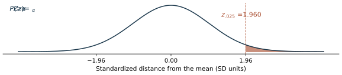
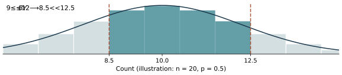
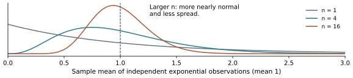
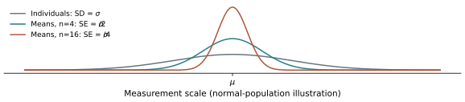

Chapter 6: Normal Distributions and the CLT
The 17-page detailed notes follow the current 95-page slide deck, including its worked examples, assumptions and explanations. The three-page quick guide collects the main ideas and equations with links back to detailed pages. The original concise review and group problems remain available below.
Sections follow slide order. Page numbers mean PDF viewer pages, including repeated reveals. Some mobile or embedded viewers ignore page links; enter the indicated page number manually if needed. The original slide content and existing resource URLs are preserved. The detailed notes explain the missing minus sign on slide p. 53, rounding versus approximation error in the fuse example, and the sampling qualification in the song illustration.
November 5 revision: notation follows the course slides; figures connect the equations to their meaning. Notes retain their existing page numbers. On a small screen, swipe a wide figure or open its full-size view.
Chapter overview
Continuous variables, densities and CDFs
Normal family, motivation and empirical rule
Standard normal, tables and probability areas

Upper-tail critical values and percentiles
Linear transformations and z-scores
Normal calculations and ponderal-index example
Normal approximation to a binomial count
Continuity correction

Fuse reliability example
From Bernoulli sums to the Central Limit Theorem

Sampling distributions of totals and means
Sampling-distribution illustration: song streams
Sums of independent normals and exact sampling distributions
Standard error of a sample mean

Alzheimer’s-duration sampling example
Sampling-distribution summary and unbiasedness
Existing concise review and group practice
The cell and fertilizer questions are separate course practice. Try them before checking solutions. Their original four-page resource is preserved.